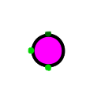
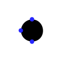

RGB-светодиод
RGB-светодиод
| Библиотека: | Ввод-вывод |
| Введён в: | 2.1.3 |
| Внешний вид: |
  |
Поведение
Компонент RGB-светодиод позволяет независимо управлять тремя каналами излучения: красным (R), зеленым (G) и синим (B) с помощью трех отдельных 1-битных входов. Когда на вход канала поступает логическая 1, соответствующий цвет загорается; когда поступает логический 0 — гаснет. Каналы могут быть включены одновременно, в результате чего отображается цвет, полученный путем аддитивного смешения активированных каналов (например, красный + зеленый дают желтый, красный + синий — пурпурный, а все три вместе — белый).
Контакты (для компонента с ориентацией вправо)
- Левая сторона (вход, разрядность равна 1):
- Красный вход. При логической 1 включает красный канал.
- Верхняя сторона (вход, разрядность равна 1):
- Зеленый вход. При логической 1 включает зеленый канал.
- Нижняя сторона (вход, разрядность равна 1):
- Синий вход. При логической 1 включает синий канал.
Атрибуты
Когда компонент выбран или добавляется, клавиши со стрелками меняют его атрибут Направление.
- Направление
- Определяет сторону, с которой располагаются входы компонента.
- Активен при высоком уровне
- Если установлено значение Да, то соответствующий канал светодиода загорается при логической 1 на входе. If установлено значение Нет — загорается при логическом 0.
- Метка
- Текст метки компонента.
- Положение метки
- Положение метки относительно компонента.
- Шрифт метки
- Шрифт метки.
- Цвет метки
- Цвет метки.
- Метка видна
- Определяет, отображается ли метка.
Поведение Инструмента «Нажатие»
Не предусмотрено.
Назад к Справке по библиотеке